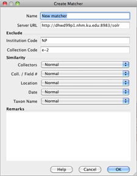
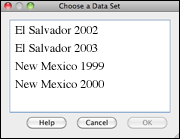
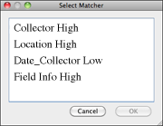
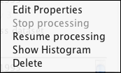
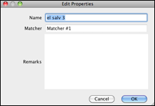
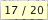
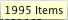

Matchers
Matchers are the set of search criteria and settings SGR uses to compare your data to the GBIF/SGR cache. Once created, the settings for Matchers may not be edited. This allows Matchers to be kept as a property of Match Results.
The name of the Matcher can be changed at any time, and will be automatically updated in the properties of Match Results.
Create a Matcher
Matchers are created using the Create Matcher dialog. Simply click on the
Create Matcher button to open the dialog.

Create a Matcher
- Name is used to name the Matcher.
- Server URL is the path Specify uses to access the server. This is not an editable field at this time.
- Exclude is used to exclude your institution code and/or collection code. Use the codes that represent your data that is already in GBIF to assure that you exclude your own data from the SGR matches.
- Similarity includes the search criteria.
Select the fields you wish to use to compare your data to the SGR indexed data by simply clicking on the pick list next to the field name. You can also choose the amount of emphasis you wish to place on each field:
Ignore Do not use this field. Low Place a lower emphasis on this field. Normal Place an average amount of emphasis on this field High Place a greater emphasis on this field.
- Remarks is a text field for writing extra information about the Matcher.
Run a Matcher
Once a Matcher has been created simply click on it in the side bar and choose a Data Set from the resulting dialog.

Choose a Data Set
Or, drag a Data Set and drop it onto a Matcher on the side bar.
SGR will then use the Solr algorithm to compare the records in your Data Set to the GBIF/SGR cache. The results will appear in a split screen in the Form View. Your records are located in the left panel and the GBIF/SGR cache records are viewed in the right panel.
Note: The Data Set and matching GBIF/SGR cache records are not saved when simply running a matcher. To save entire Data Sets along with their matching GBIF/SGR cache records use the Process Data Set button located on the side bar under Match Results.
Edit a Matcher
Right-click on a matcher and click on the resulting Edit button to edit a Matcher.
Once a matcher has been created only the Name and the Remarks may be edited. This allows users to reuse matchers and know that they are exactly what have been used in the past as well as review a matcher to see exactly what criteria were used on past searches.
Matchers may not be deleted unless there are no Match Results that refer to them.
The Name of the Matcher can be changed, and will be automatically updated in the properties of Match Results.
Match Results
The algorithm SGR uses to find matches compares a combination of both the exactness and uniqueness of the value used in the match. This allows SGR to reorder your Data Set with the records most likely to have matches at the top of the order and the least likely at the bottom. SGR also color codes the records, as well as the returned GBIF/SGR cache records, based on this order with green representing a likely match and red representing a less likely match. This ordered pairing is called a Match Result. When using a Match Result to compare your records against the resulting GBIF/SGR cache records you are able to start with the records which include the most probable matches first.
When a Match Result is open the original Data Set and all Match Results which use it will become inactive on the side bar.
SGR adds an SGR Score field to the Match Result file. This allows you to click on the field name and return the Match Result to the original, unsorted state.
Create a Match Result
Click on the
Choose a Data Set
Next, you will be asked to choose a Matcher.
Or drag and drop a Data Set from the side bar onto the

Select Matcher
While SGR is processing the Data Set, a
(system) icon will be displayed rather than the SGR logo.
When the SGR process is complete the Data Set will open in Grid view. It is now reordered and prioritized.
To view the Data Set records along with the resulting GBIF/SGR cache records, click on the Form View button. The results will appear in a split screen with your Data Set records editable in the left panel and GBIF/SGR cache records viewed the right panel.
Context Menu
Right-click on a Match Result for a context menu. The context menu is not available when Match Results are open in SGR. If the desired Match Result is inactive simply close it in SGR.

Match Result Context Menu
- Edit properties
You can rename the batch result and/or add notes or comments about the batch result in a properties editor. The properties editor also displays the name of the matcher used to create the batch result.

Edit Match Result Properties
- Stop Processing
Large Data Sets may take quite a few minutes to process. If you do not wish to leave the process running while you are away from your machine, you may choose to stop the process by clicking the Stop Processing button.
To view the progress, hold your mouse over the Match Result on the side bar. If the process was stopped two numbers will appear separated by a slash (). A completed Match Result will show the number of items ().
You may also hold your mouse over a Match Result while it is processing to view how many records have been processed. To update, simply move your mouse off the Match Result for a second, then place it back over the Match Result, allowing the status to refresh.
- Resume Processing
Resume processing the rest of the Data Set at another time by clicking the Resume Processing button.
- Show Histogram
A historgram offers a graphical view of the distribution of SGR scores. It uses 30 colors to represent the SGR score and plots the number of rows that fall within a particular score (color) range. A histogram which displays a bimodal distribution is often an indication of good results. This type of histogram includes two high peaks with a 'neck' in the middle. The neck represents a threshold that separates probable duplicates from probable non-duplicates.
- Delete
Click the Delete button in the context menu or drag and drop a Match Result to the garbage can to delete it.